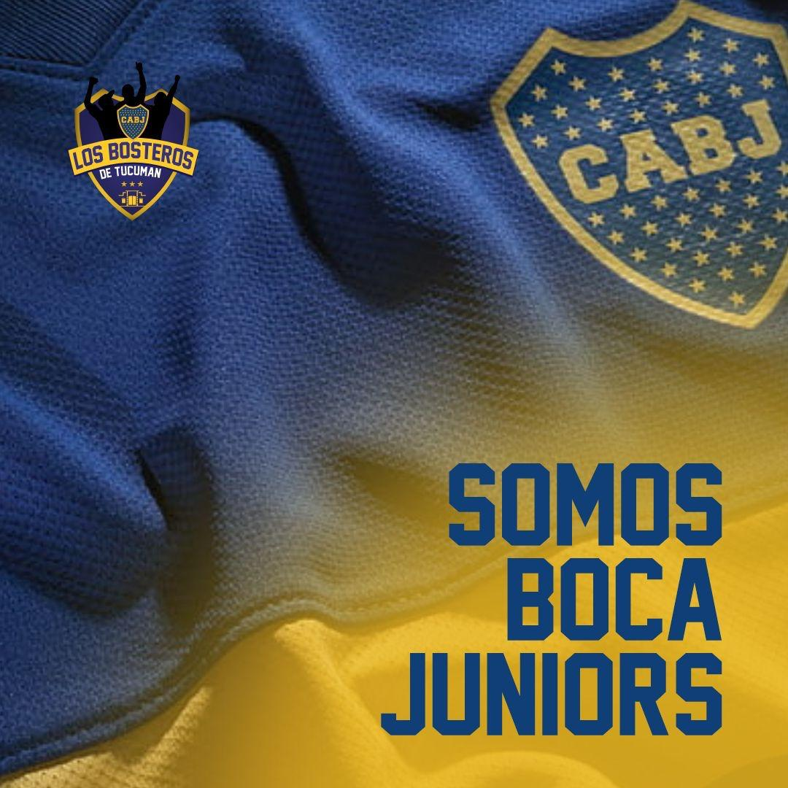
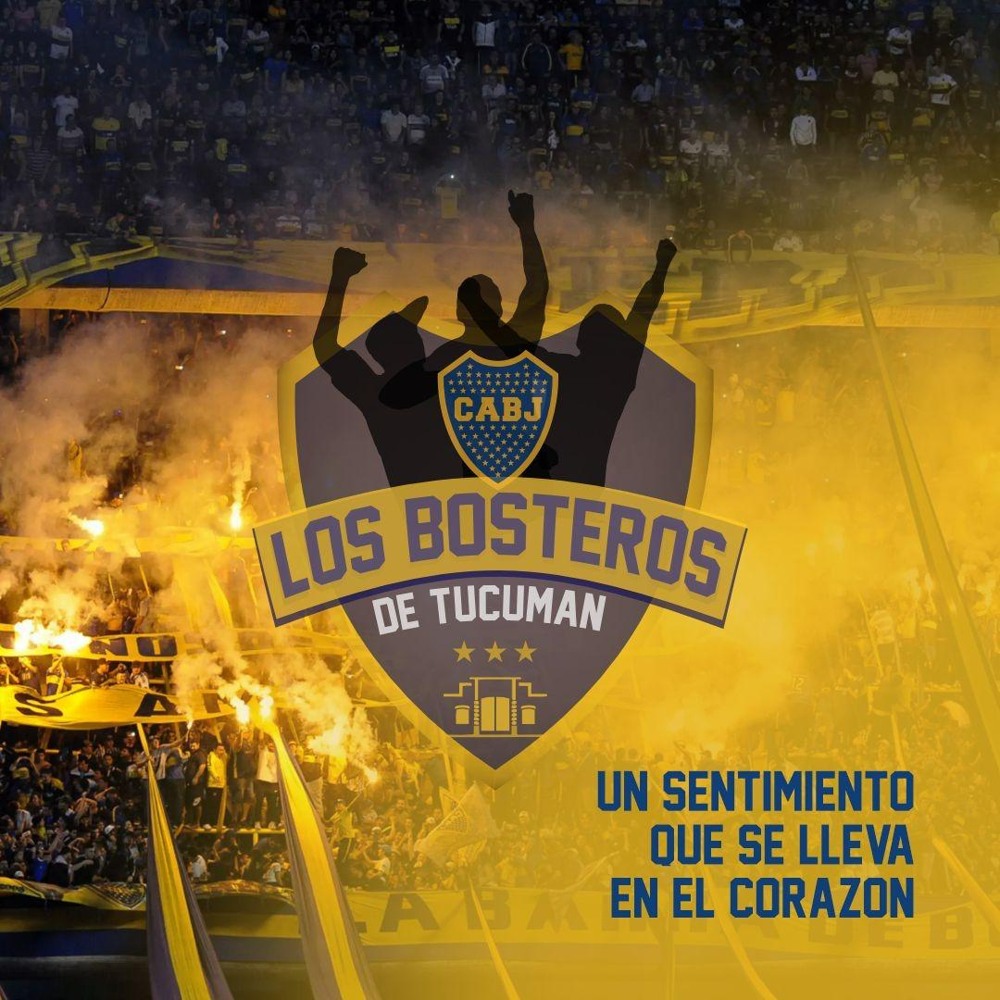
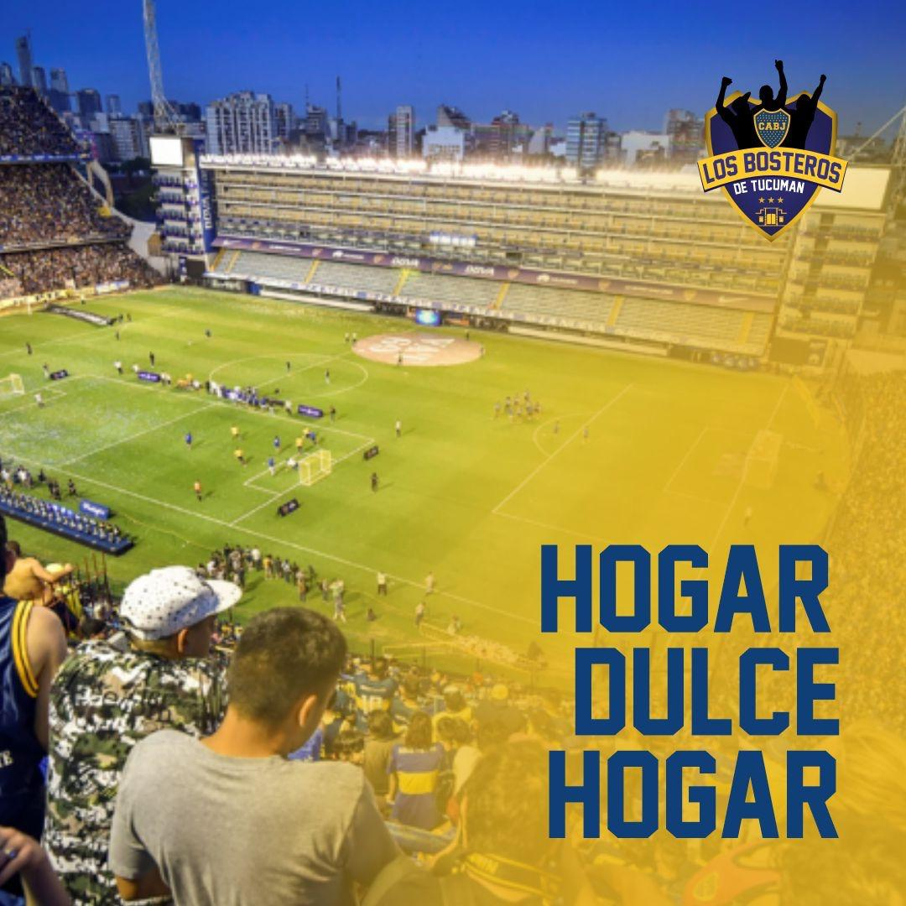

FÚTBOL05 SEP 2026 · BOCA 24/7
Empate en Mendoza
Boca y Gimnasia terminaron 2-2. Velasco y Zenón hicieron los goles xeneizes.
LEER NOTICIA →LA PASIÓN NO SE DESCONECTA
Noticias, partidos, resultados y la voz del hincha. Una portada viva, pensada para entrar y saber qué está pasando.


FÚTBOLBoca y Gimnasia terminaron 2-2. Velasco y Zenón hicieron los goles xeneizes.
LEER NOTICIA →
Transmisiones, partidos en vivo, actualidad, opinión y toda la pasión xeneize. El canal de nuestra comunidad tiene su lugar en Boca 24/7.
IR AL CANAL →El enlace queda listo para reemplazar por la URL exacta de tu canal.Porque Boca no termina en la cancha. Opinión, pasión, comunidad y la voz de quienes hacen grande esta historia.
ENTRAR →